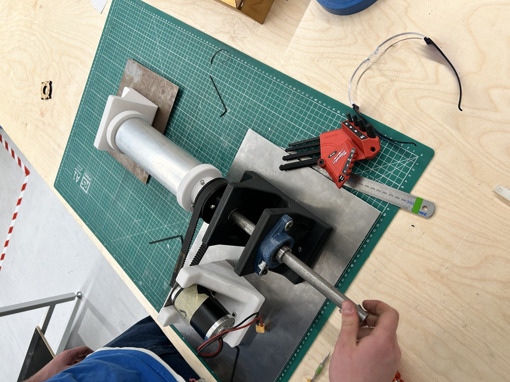
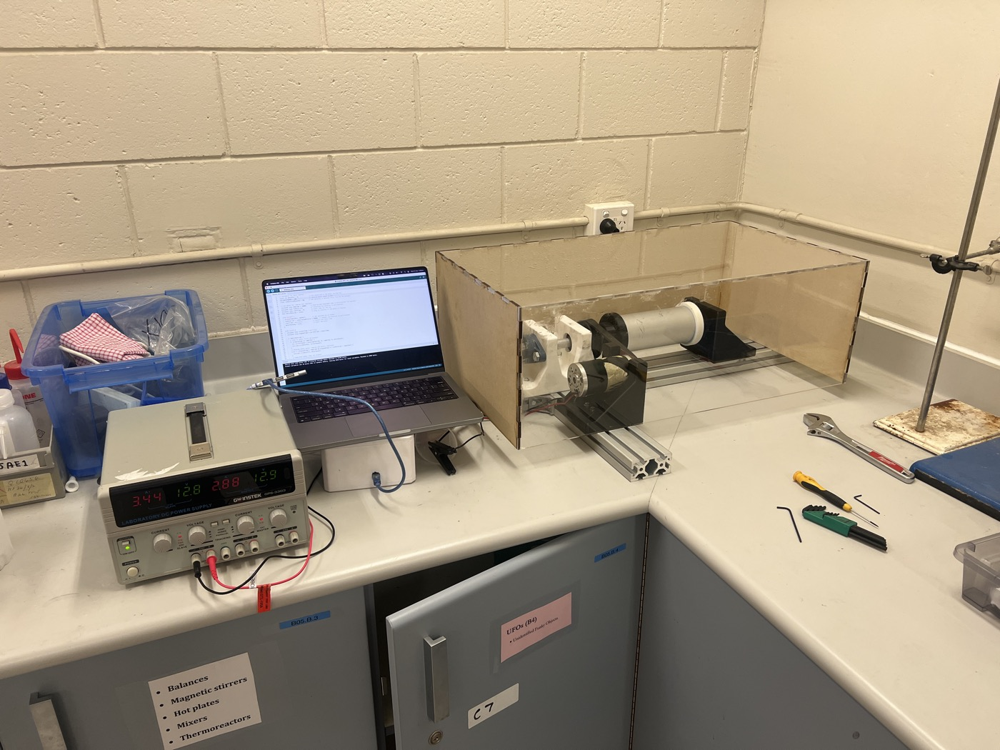
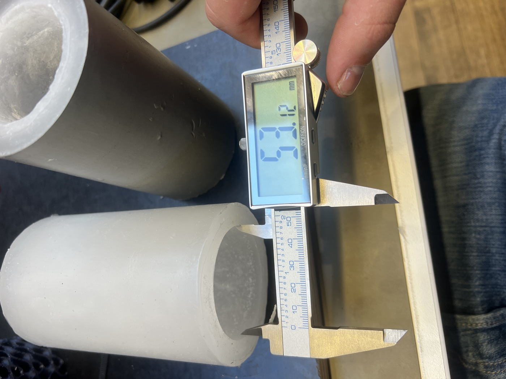
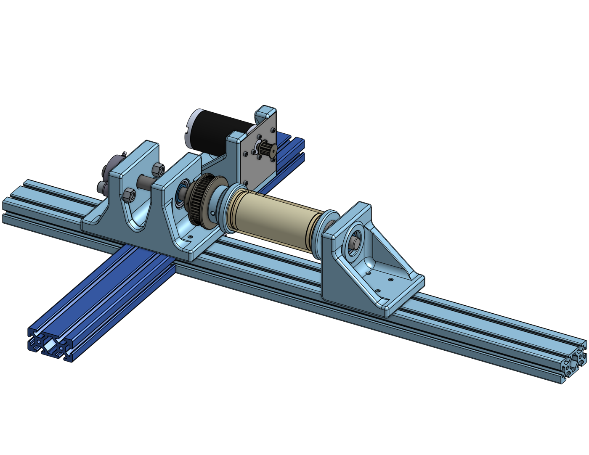
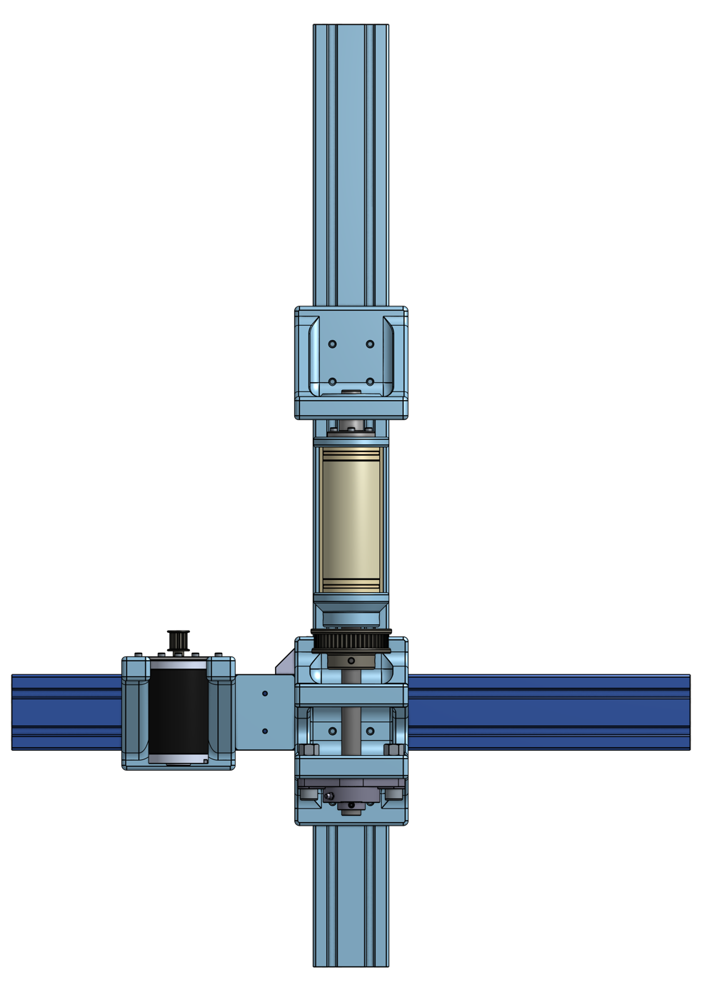
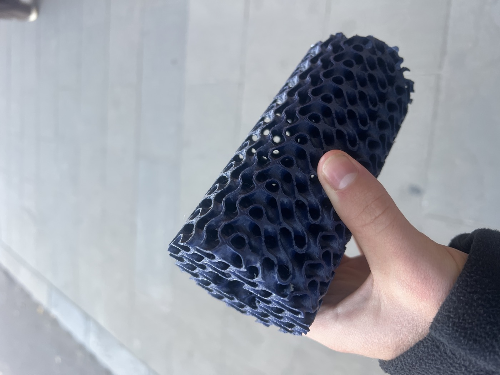

Problem
Paraffin wax is an attractive hybrid fuel due to its high regression rate, low cost, and ease of handling. Gravity-cast methods produce air bubbles and internal voids that cause unstable burn characteristics. Spin-cast fuel grains offer a monolithic, void-free structure with a concentric port — but ARES had no access to industrial casting equipment.
The Rig
The rig spins a cylindrical mould about its central axis while the paraffin solidifies. Centrifugal force drives the melt outward uniformly, leaving a clean concentric port along the axis.


Left: rig during assembly. Right: operational setup — Arduino PWM via ESC, bench power supply, acrylic containment shield.
Key design decisions:
- Motor and belt-drive sized to test variable RPM — optimal spin speed determined experimentally for the target grain geometry
- Mounted on t-slot extrusion so grain length can be changed without redesigning the rig
- ESC controls motor speed via Arduino PWM
- Alignment features machined into mould end-caps to ensure coaxiality of the port mandrel
- Insulated enclosure to slow cooling rate and reduce residual stress
Casting Process
The procedure was developed iteratively through test casts — each grain sectioned and inspected for voids, port concentricity, and surface finish. Chemical safety and hazard operability studies were completed and submitted before any spin casting commenced.

Dimensional inspection of a cast grain — outer diameter measured at 57.12 mm.
CAD Design
The rig was fully modelled in SolidWorks before fabrication — enabling interference checks, bearing selection, and belt-drive geometry to be resolved on screen before cutting metal.


SolidWorks renders — isometric assembly view and front elevation.
Gyroid Casting Development
A parallel development investigated casting paraffin into ABS 3D-printed gyroid structures. The gyroid geometry — a triply periodic minimal surface — dramatically increases the fuel surface area compared to a plain cylindrical port, which raises regression rate and total thrust without changing the grain envelope. The ABS scaffold is printed, filled with molten paraffin, then retained as-is or dissolved post-cast depending on the test objective.

ABS-printed gyroid structure prior to paraffin infill.